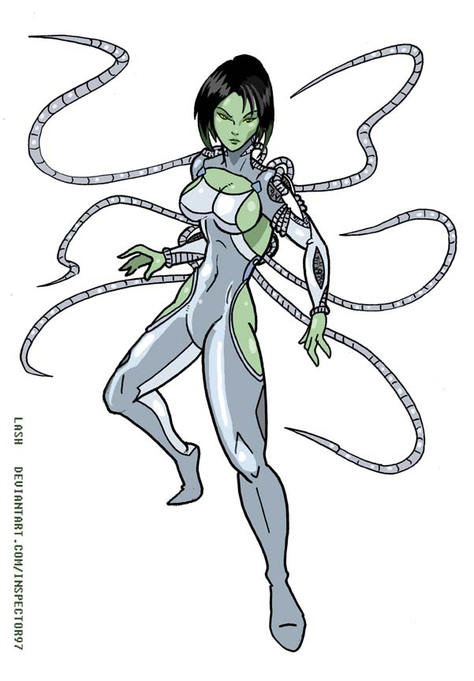

Directory & Files Setup
As long as you have a Java Runtime Enviroment [JRE] installed on the system you're using you can maintain Hero Designer in any way that you want. At times I've used it on a USB stick and ran it on different computers that had the JRE installed. I try to break it down into some type of originization though so I know where all of my files are. Nothing can be more frustrating [And I speak from personal experience!] than trying to find a template or prefab and not knowing what directory you left it in last.
I currently have my directory folders set up this way:
Hero Designer
-- Characters [Original Stuff]
-- Fantasy Hero
-- Spells
-- Equipment
-- Monsters
-- Dark Champions
-- Equipment
....
-- Core [Main Program Files]
-- Exports [All of my HDE/HCRs]
-- Packages [Files brought from Hero Games]
-- Golden Age Champion's
-- Fantasy Hero
-- Champion's
-- Dark Champion's
-- Hero System Martial Arts
-- ....
Okay. So you may not want to go to that extreme sorting through everything. You may just dump everything into one folder along with all the core files or you may have it scattered about. Believe me, after awhile when you start doing things you will want to orginize everything in a way you can find it later on. Now if I can just do that with my other files I'll be good.
The 'Notes' Tabs & Tags
Dan Simon was kind enough to give Users 5 Note tabs that can be worked with to add extra information to their character files. I've seen people use these for group information, background notes, GM notes, character creation stuff. I've known one player that used a Note tab to keep website links that his character might use during a game or things he thought other players and the GM would find useful.
Our Notes tabs are actived by check-marking them inside the Campaign Rules of the current character. Use the Settings tab to click which Notes you want to use as well as label them. Change the label name to what you want to use.
I listed the full tags below. Looking at it it seems a lot. In actually there are only 2 tag pairs and one replacement tag. They are all the same except for the numbers 1-5 at the end of them. Because of that I'm only going to really cover NOTES1.
Notes Code
<!--IF_NOTES1-->
<!--/IF_NOTES1-->
<!--NOTES1-->
<!--/NOTES1-->
<!--NOTES1_LABEL-->
<!--IF_NOTES2-->
<!--/IF_NOTES2-->
<!--NOTES2-->
<!--/NOTES2-->
<!--NOTES2_LABEL-->
<!--IF_NOTES3-->
<!--/IF_NOTES3-->
<!--NOTES3-->
<!--/NOTES3-->
<!--NOTES3_LABEL-->
<!--IF_NOTES4-->
<!--/IF_NOTES4-->
<!--NOTES4-->
<!--/NOTES4-->
<!--NOTES4_LABEL-->
<!--IF_NOTES5-->
<!--/IF_NOTES5-->
<!--NOTES5-->
<!--/NOTES5-->
<!--NOTES5_LABEL-->
NOTES1 Block
For this example I'm going to use the NOTES1 block as some notes I've done for the character. Shoshuro Kashida was origianlly a Legend of the Five Rings character that was translated to D&D 3.5 / Rokugan when it came out and I switched over using KillerShrike's notes from his website. I am also doing this as a HTML definition list [dl] for those keeping track.
We start with <!--IF_NOTES1--> <!--/IF_NOTES1--> tags. These will check to see if the Notes Tab is activated inside our Rules files.
<!--IF_NOTES1-->
<dl>
<dt><!--NOTES1_LABEL--></dt>
<dd> <!--NOTES1--><br><!--/NOTES1--> </dd>
</dl>
<!--/IF_NOTES1-->
The NOTES1_LABEL will pull out it's information from the Settings Tab when you turn it on. By default it'll read whichever tab is turned on (i.e. Notes 1). You could hard code it inside your file if you're the only one using the template and you know exactly what the tab is for regardless of the character. You may also even leave the label out and just use the notes. For example one person would keep extra CSS styles inside his Notes 5 tab so it would change depending on the character. Whatever you'e set your NOTES#_LABEL to though, you can see it as the tab label when you look at the loaded character
The meat of the subject of course, is the <!--NOTES5--> <!--/NOTES5--> tag pair. This will export anything that is typed inside the Notes text box. Like all text boxes inside Hero Designer you can input HTML/XML code inside of there, so you may do paragraphs, lists, etc. And yes, you can even put in image tags as well as long as the image is in the same directory or whatever one is loaded. If you do nothing but plain text though, it will be exported as that, plain text. Hero Designer does NOT recognize line feeds though. All those little breaks between paragraphs will be gone.
In order to fix that we attach a <br> tag between our Notes tags
<!--NOTES1--><br><!--/NOTES1-->
That's it. That's all the code you need for the Notes section, duplicated 5 times over. Some exports may need all five of the Notes areas, some may not use any at all. I've found that it depends on the Export your doing, the game you're playing in, as well as what you as the owner of the character may want. All of this can be a very...niche(?) thing. An Export file that uses Notes 3 may be broken because the User put that information on Notes 2. When doing these I would suggest using some caution and fore-thought.
Boiler Plate Code [NOTES1]
<!--IF_NOTES1--> <dl> <dt><!--NOTES1_LABEL--></dt> <dd> <!--NOTES1--><br><!--/NOTES1--> </dd> </dl> <!--/IF_NOTES1-->
This will add NOTES1 to your style block at the head of a page.
<!--IF_NOTES1--> <style> <!--NOTES1--> <!--/NOTES1--> </style> <!--/IF_NOTES1-->